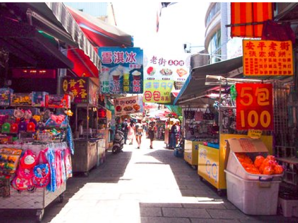

Attraction 観光名所

安平老街
「台湾の京都」の異名を持つ古都・台南。かつて台湾の首都であったことから、重要な史跡が点在し、ノスタルジックなムードが漂っています。17世紀に造られた台湾最古の街は、現在、台湾レトロとも称されており、数々の掘り出し物やお土産、飲食店が立ち並びます。写真スポットとしても人気の高いエリアです。


露店めぐりは日中、ノスタルジックな撮影は夜がおすすめです。
赤崁楼

赤嵌楼は台南中西区の代表的な古跡で、安平区の安平古堡と並んで台南の二大古跡になっています。夜になると、周辺には黄色いライトが灯り、古い建築物をより一層味わい深く演出してくれます。前方の広場ではよく音楽会が催され、台南市民の夜の憩いの場にもなっています。赤嵌楼は、昼も夜も独特の魅力で楽しませてくれるでしょう。


遅い時間帯はライトアップも楽しめます。 営業時間 8:30 ～21:30
Gourmet グルメ
台南でしか味わえない台湾グルメをご紹介いたします。
担仔麺
タンツーメン

台湾の屋台などでもよく食べられている麺料理で、あっさりしたスープにそぼろがトッピングされているのが特長です。「度小月」は各地に支店を持つ人気店 です。
画像を見る
蝦仁飯
エビ飯

台南10大美食にも選ばれている代表料理です。中でも有名な「矮仔成」は、台南に来ないと味わえない料理として知られており、日本人にも好まれる味です。
画像を見る
小籠包
ショウロンポー

小籠包は世界中で愛されている台湾料理の一つですよね。「上海華都小吃」は、上海スタイルの料理を提供してくれるお店で、特に小籠包に定評があります。
画像を見る
鴨肉飯
ヤーロウファン

台湾の軽食文化を指す小吃は、台湾の人々の日々の食生活に欠かせないものとなっています。中でも「亞德當歸鴨」の鴨肉飯は人気の一品です。
画像を見る
Healing 癒しのスポット
美しい蓮の花々が咲く白河地区。 自然に囲まれて、至福のひとときを過ごしませんか？
白河蓮花
白河地区は、蓮の栽培が盛んであり、美しい蓮の花が咲く景観で知られています。特に夏には蓮の花が最盛期を迎えるため、白河蓮花節などのイベントが開催されて多くの観光客が訪れます。

白河地区の蓮花は「台南白河蓮花」とも呼ばれています。台南市の観光や文化の象徴の一つとされており、地元の経済や観光に重要な役割を果たしています。